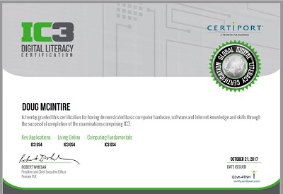

My Accomplishments
My name is Doug and I graduated with a Master of Arts degree in Adult Education from the University of Phoenix in 2006 and a Bachelor of Science degree from the University of the State of New York, Regents College in 1995. I have spent over 25 years teaching and writing training for certification companies, Fortune 50 companies, and local colleges.
I am also a veteran of the US Army, honorably discharged in 1995 as a Staff Sergent with 9 1/2 years of service. While enlisted, I learned the Russian language, I was named the 1987 Soldier of the Year for III Corps and Fort Hood, and I jumped out of perfectly good airplanes. Now I like to fish (catch and release), ride my motorcycle - though I do this less frequently these days, and walk on the beach whenever possible with my wife, Maria.
I've been quite inclusive of my accomplishments here. At the bottom of this page, there are links going back to January 1986. The timeline is from most recent back.
After months of training my Marketing Team collegues, I was the first to take my CompTIA Network+ certification examination. I passed. After my training, 75% of my team also passed on their first attempt.
I was originally Network+ certified on Monday, March 15, 2004. My pervious Network+ certification is good for life. I didn't need to recertify, but I did to "lead by example" for the rest of the Marketing Team.
Saturday, October 19, 2019
Passed the FCC Amateur Radio Amateur Extra Class Exam — Call Sign: KI5GPS
Amateur Extra is the highest Amateur Radio Class License allowed by the FCC. After passing the General Class exam, I studied for two weeks before taking this examination. I only missed one question on the test.
I passed the FCC Amateur Radio General Class Operator on Saturday, October 5, 2019 after studying hard for two weeks.
I passed the FCC Amateur Radio Technician Class Exam on Saturday, September 21, 2019. I didn't miss any questions on the exam. My call sign is KI5GPS.
May 30, 2018
I Became a Registered Dental Assistant (RDA)
I became a Registered Dental Assistant (RDA). My wife, a Registered Dental Hygeinist of several years, and I wanted to open a school to register Dental Assistants. She told me that I needed to become an RDA myself, before I could teach it in a school.
We ran the school for a few months, but both of us were working fulltime. The school became too much of a time burden with our work schedules.
October 21, 2017
IC3 Digital Literacy Certification — GS4

I took two tests on this day: Key Applications & Living Online. I passed both tests, which makes me IC3 Digital Literacy Certified. I was the first of the Austin Communiy College Adult Education Instructors to become certified.
I passed the first of the three examinations, Computing Funamentals, on August 12, 2017.
November 2009
National Novel Writing Month (NaNoWriMo) — 2009
During the month of November, people from all over the world each work to write a novel before the month is over. A novel, in this endeavor, is considered 50,000 words, which breaks down to 1,667 words a day.
This year I wrote a novel titled Hard Taffy, a story about a young girl, a street urchin, based in the not-so-distant future. I finished on November 29th with 52,780 words.
Note: While this book, as all my novels, remain unpublished, it was a wonderful accomplishment to have written my seventh novel!
November 2008
National Novel Writing Month (NaNoWriMo) — 2008

This year I wrote a novel titled The Darkness of Night, a story about a normal college kid who stumbles upon the secret of becoming a vampire by accidently becoming one himself. I finished on November 30th with 55,155 words.
Note: This was my sixth novel!